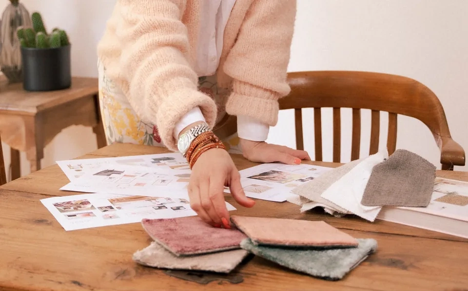
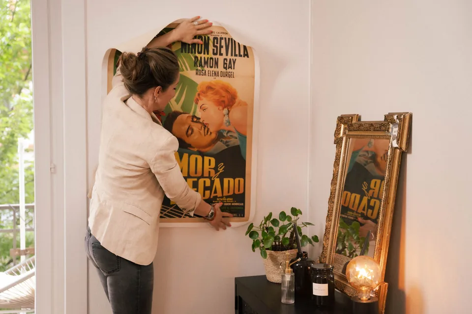
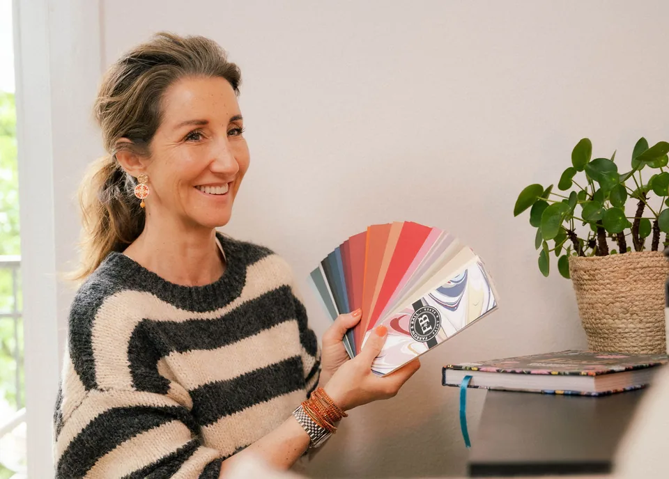

Gesamtkonzept
Für Kundinnen und Kunden, die ein stimmiges Ganzes möchten, aber nicht die nötige Zeit oder Energie für die Planung investieren können.
Details ansehenMaterial · Licht · Strom · Möbel · Details
Durchdacht planen - weniger bereuen!
Frühe Entscheidungen bei Umbau oder Neubau ermöglichen einen gesamtheitlichen Blick.
Details
Durchdacht planen - weniger bereuen!
Aus alt wird neu oder von Grund auf neu: Beides bringt viele Entscheidungen mit sich. Ich unterstütze Sie zielorientiert und mit gesamtheitlichem Blick bei Materialien, Farben, Strom, Licht, Möblierung und praktischen Details.
Wer früh plant, kann Stauraum, Steckdosen, Abläufe und spätere Problemzonen besser optimieren.
Vom Sichten von Plänen und Entlarven von Problemzonen bis zum kompletten Wohnkonzept mit Materialisierung und Moodboard entscheiden Sie Schritt für Schritt, wie viel Hilfe Sie brauchen.
Angebote
Je nach Situation lassen sich Angebote sinnvoll kombinieren.

Für Kundinnen und Kunden, die ein stimmiges Ganzes möchten, aber nicht die nötige Zeit oder Energie für die Planung investieren können.
Details ansehen
Ein Umzug wird leichter, wenn Möbel, Farben und fehlende Stücke für das neue Zuhause früh durchdacht werden.
Details ansehen
Farben stimmig wählen und Räume oder Lieblingsstücke zum Strahlen bringen.
Details ansehenNächster Schritt
Schreiben Sie kurz, wo Sie im Projekt stehen. Ich melde mich mit einer Einschätzung, welche Entscheidungen jetzt sinnvoll sind.